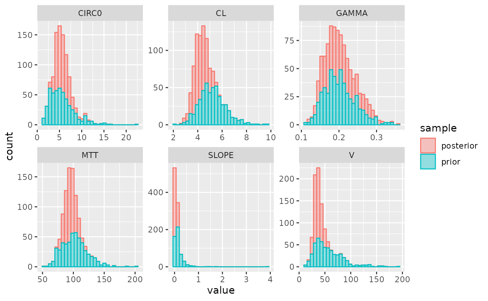

Neutropenia (PKPD)
example-pkpd-neutropenia.RmdThis examples shows how to implement the Friberg neutropenia model. What is implemented here is a generic version of it, i.e. not for a specific drug. We will sample from the posterior for the individual patients using TDM data and neutrophil count data.
We will first create the Stan model and sample from the posterior.
First, we define the model and parameters. Note that in this exmaple we specify ruv as a list that contains separate residual errors for pk- and pd-labeled observations.
parameters <- list(CL = 5, V = 50,
SLOPE = 0.1, MTT = 100,
CIRC0 = 5, GAMMA = 0.2)
iiv <- list(
CL = 0.2, V = 0.5,
SLOPE = 1.0, MTT = 0.2,
CIRC0 = 0.5, GAMMA = 0.2
)
ruv <- list(
pk = list(add = 0.2),
pd = list(add = 0.3)
)
parameter_definitions <- list(
"CL" = "CL",
"Q" = 0,
"V" = "V",
"V2" = 1,
"KA" = 0,
"MTT" = "MTT",
"CIRC0" = "CIRC0",
"GAMMA" = "GAMMA",
"ALPHA" = "SLOPE"
)
ode <- "
real ka = 0;
real k10 = CL / V;
real k12 = 0;
real k21 = 0;
real ktr = 4 / MTT;
real conc;
real EDrug;
real transit1;
real transit2;
real transit3;
real circ;
real prol;
dAdt[1] = -KA * A[1];
dAdt[2] = KA * A[1] - (k10 + k12) * A[2] + k21 * A[3];
dAdt[3] = k12 * A[2] - k21 * A[3];
conc = A[2] / V;
EDrug = ALPHA * conc; // slope model, not Emax
prol = A[4] + CIRC0;
transit1 = A[5] + CIRC0;
transit2 = A[6] + CIRC0;
transit3 = A[7] + CIRC0;
circ = fmax(machine_precision(), A[8] + CIRC0); // Device for implementing a modeled
// initial condition
dAdt[4] = ktr * prol * ((1 - EDrug) * ((CIRC0 / circ)^GAMMA) - 1);
dAdt[5] = ktr * (prol - transit1);
dAdt[6] = ktr * (transit1 - transit2);
dAdt[7] = ktr * (transit2 - transit3);
dAdt[8] = ktr * (transit3 - circ);
"
model <- new_stan_model(
parameters = parameters,
parameter_definitions = parameter_definitions,
ode = ode,
covariate_definitions = NULL,
solver = 'pmx_solve_rk45',
obs_types = c("pk", "pd"),
custom_ipred = list(
"pk" = "A[2, ] ./ V;",
"pd" = "A[8, ] + theta[7];"
),
verbose = T
)
model_file <- write_stan_model(model)and compile the model:
mod <- load_model(
model_file
)Define the input data and prepare for use in Stan. Note that in the definition of tdm_data we use the type argument to distinguish between PK and PD observations.
regimen <- new_regimen(
amt = 1500,
n = 3,
times = c(0, 24, 48),
type = 'infusion',
cmt = 2,
t_inf = 2
)
covariates <- NULL
tdm_data <- data.frame(
t = c(2.5, 11.5),
dv = c(40, 14),
type = "pk"
)
pd_data <- data.frame(
t = c(3, 6, 9, 12) * 24,
dv = c(5, 1.5, .8, 2),
type = "pd"
)
comb_data <- rbind(
tdm_data,
pd_data
)
data <- new_stan_data(
regimen,
covariates = covariates,
data = comb_data,
parameters = parameters,
iiv = iiv,
ltbs = list(pk = TRUE, pd = TRUE),
ruv = ruv,
dose_cmt = 2
)Then, we can sample from the posterior using:
post <- get_mcmc_posterior(
mod = mod,
data = data
)## Running MCMC with 1 chain...
##
## Chain 1 Iteration: 1 / 1000 [ 0%] (Warmup)
## Chain 1 Iteration: 50 / 1000 [ 5%] (Warmup)
## Chain 1 Iteration: 100 / 1000 [ 10%] (Warmup)
## Chain 1 Iteration: 150 / 1000 [ 15%] (Warmup)
## Chain 1 Iteration: 200 / 1000 [ 20%] (Warmup)
## Chain 1 Iteration: 250 / 1000 [ 25%] (Warmup)
## Chain 1 Iteration: 300 / 1000 [ 30%] (Warmup)
## Chain 1 Iteration: 350 / 1000 [ 35%] (Warmup)
## Chain 1 Iteration: 400 / 1000 [ 40%] (Warmup)
## Chain 1 Iteration: 450 / 1000 [ 45%] (Warmup)
## Chain 1 Iteration: 500 / 1000 [ 50%] (Warmup)
## Chain 1 Iteration: 501 / 1000 [ 50%] (Sampling)
## Chain 1 Iteration: 550 / 1000 [ 55%] (Sampling)
## Chain 1 Iteration: 600 / 1000 [ 60%] (Sampling)
## Chain 1 Iteration: 650 / 1000 [ 65%] (Sampling)
## Chain 1 Iteration: 700 / 1000 [ 70%] (Sampling)
## Chain 1 Iteration: 750 / 1000 [ 75%] (Sampling)
## Chain 1 Iteration: 800 / 1000 [ 80%] (Sampling)
## Chain 1 Iteration: 850 / 1000 [ 85%] (Sampling)
## Chain 1 Iteration: 900 / 1000 [ 90%] (Sampling)
## Chain 1 Iteration: 950 / 1000 [ 95%] (Sampling)
## Chain 1 Iteration: 1000 / 1000 [100%] (Sampling)
## Chain 1 finished in 58.6 seconds.Summary info about the posterior:
post## Parameters:
## posterior_mode mean median sd q5 q95 rhat
## CL 4.069 4.220 4.201 0.539 3.355 5.132 1.006
## V 34.584 36.997 36.002 7.330 26.283 50.079 1.001
## SLOPE 0.060 0.059 0.058 0.016 0.035 0.086 0.998
## MTT 94.742 95.011 94.716 8.627 81.397 109.523 0.999
## CIRC0 5.014 5.686 5.464 1.440 3.742 8.090 1.003
## GAMMA 0.186 0.204 0.197 0.041 0.148 0.279 1.004
##
## Observed data, posterior:
## type time dv mean loc pct pct5 pct95
## 1 pk 2.5 40.0 35.1969640 -----|---o- 0.808 26.0733850 45.252310
## 2 pk 11.5 14.0 12.1645054 -----|---o- 0.838 9.3491765 15.305140
## 3 pd 72.0 5.0 4.5255091 -----|--o-- 0.708 3.1641995 6.190220
## 4 pd 144.0 1.5 1.7014853 --o--|----- 0.278 1.1376500 2.271029
## 5 pd 216.0 0.8 0.8655025 ---o-|----- 0.436 0.5374418 1.301487
## 6 pd 288.0 2.0 2.0045579 -----|-o--- 0.554 1.2407715 3.024030Plot parameter distributions:
plot_params(post)